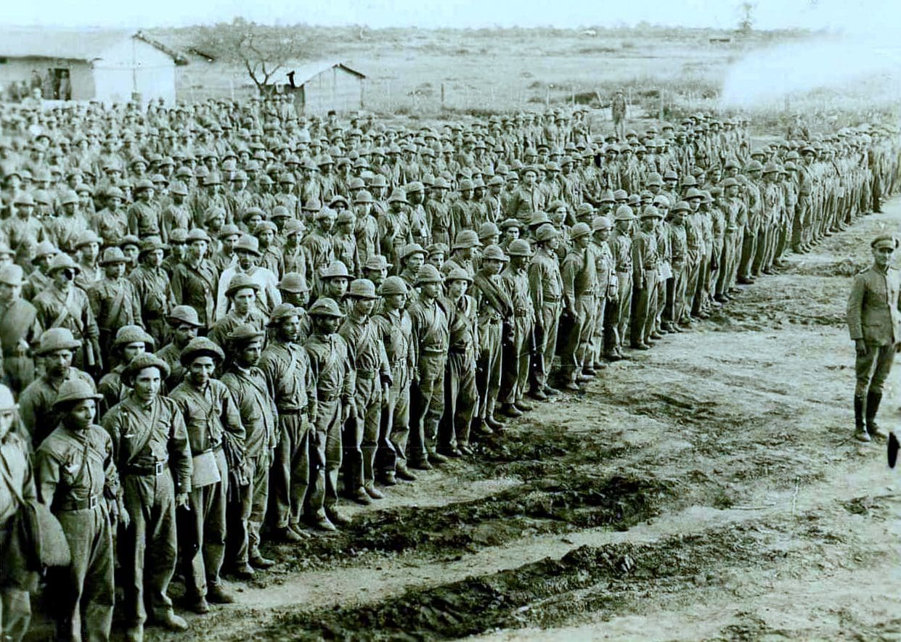
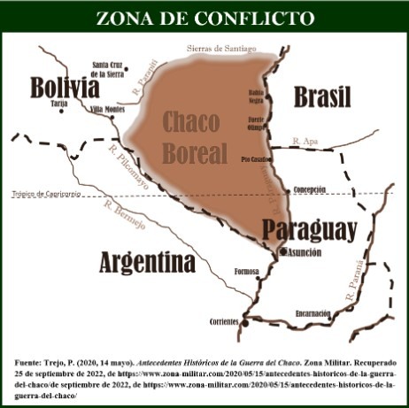

La Guerra del Chaco
La Guerra del Chaco (1932-1935) fue el mayor conflicto bélico de Sudamérica del siglo XX, y tuvo consecuencias negativas para el Paraguay y para Bolivia. Los antecedentes del conflicto deben buscarse en la colonización española de América. Al producirse la independencia, las nuevas naciones americanas se consideraron herederas de las divisiones territoriales coloniales, que eran confusas. El Virreinato del Río de la Plata abarcaba aproximadamente el territorio de las actuales repúblicas del Paraguay, Uruguay, Argentina y Bolivia. Exceptuando el Uruguay, que estaba muy alejado del Chaco, los otros tres países reclamaron el territorio del Chaco, apoyándose en las leyes españolas. La ciudad de Charcas (hoy Sucre, Bolivia) tenía jurisdicción sobre una parte del Chaco. Según las leyes españolas, las ciudades (p. e., Asunción) tenían jurisdicción en un área de cien millas a la redonda; de hecho, Asunción exploró y fundó algunos asentamientos en el Chaco, como Fuerte Borbón (hoy Olimpo). Pero Buenos Aires había sido la capital del Virreinato del Río de la Plata, y como tal había ejercido alguna forma de gobierno en el Chaco. Dependiendo de la interpretación, las leyes coloniales apoyaban las reclamaciones del Paraguay, la Argentina y Bolivia. El tratado de la Triple Alianza (firmado el 1 de mayo de 1865) concedió a la Argentina el Chaco hasta Bahía Negra. Pero en 1876, con el tratado Machaín-Irigoyen, la Argentina reconoció como paraguayo el territorio situado al norte del Pilcomayo, exceptuando la zona de Villa Hayes. El arbitraje del presidente norteamericano Rutheford Hayes adjudicó al Paraguay la zona de Villa Hayes. A partir de entonces, la discusión sería entre el Paraguay y Bolivia, que no pudieron ponerse de acuerdo sobre los límites durante el siglo XIX, a pesar de que firmaron tres tratados, al final rechazados. Para 1930, el Paraguay había poblado la región chaqueña del sureste y del centro, mientras que Bolivia había poblado la del noroeste. La solución razonable hubiera sido negociar los límites de la zona en que no existía una ocupación efectiva de ninguno de los dos países. No lo permitieron las circunstancias: ningún Gobierno podía hacer concesiones al del otro país sin pagar un alto costo político. Por eso, el Gobierno boliviano llevaba sus reclamaciones hasta la región de Villa Hayes; el paraguayo, hasta la del Parapití.
El Desarrollo del Conflicto
Las grandes ofensivas comenzaron en 1932, después de varios años incidentes y de paz armada, que exigieron enormes gastos militares. Durante las presidencias de Eligio Ayala (1924-28), José P. Guggiari (1928-32) y Eusebio Ayala (1932-36), el Paraguay llegó a gastar el 50% de su presupuesto en defensa. Las soluciones negociadas resultaron imposibles, y la guerra estuvo a un paso de comenzar en 1929. En diciembre de aquel año, un destacamento paraguayo ocupó Fortín Vanguardia, puesto boliviano de la zona de Bahía Negra. Bolivia respondió ocupando Boquerón, se rompieron las relaciones, y la intervención de chile impidió el inicio de una guerra abierta. Otros países americanos formaron la Comisión de Neutrales, que se reunió en Washington y consiguió apaciguar a las dos naciones por cierto tiempo. A la larga, la Comisión de Neutrales no pudo evitar ni detener el enfrentamiento armado. La ruptura definitiva se produjo en junio de 1932, cuando un destacamento boliviano ocupó el fuerte paraguayo Carlos Antonio López, a orillas de la laguna Pitiantuta. Tropas paraguayas retomaron el fuerte; los bolivianos respondieron ocupando los fuertes paraguayos de Boquerón, Corrales y Toledo. En agosto de 1932, la Liga de Neutrales hizo un inútil llamado a la paz. En el mismo mes, ocupó la presidencia del Paraguay Eusebio Ayala, quien entregó la comandancia de las tropas del Chaco al entonces teniente coronel José Félix Estigarribia. Daniel Salamanca era presidente de Bolivia. El comandante de las fuerzas bolivianas era el general alemán Hans Kundt. Kundt había ganado experiencia en la Primera Guerra Mundial, pero trató de aplicar en el Chaco, en forma demasiado estricta, las tácticas de aquella contienda. Estigarribia, por lo contrario, optó por una guerra de movimientos: retrocedía en caso de necesidad y tomaba en cuenta las características del terreno; en especial, la disponibilidad de agua, un serio problema en el Chaco. A causa del agua, las acciones militares se desarrollaron principalmente en una franja de terreno relativamente cercana al río Pilcomayo, situada en los actuales departamentos de Villa Hayes y Boquerón. Estigarribia inició las operaciones en gran escala en septiembre de 1932 con la ofensiva que capturó Boquerón y luego otras posiciones del adversario (Toledo, Corrales, Arce).

Consecuencias del Conflicto
Pero varios factores lo obligaron a detener la ofensiva en diciembre de aquel año. Desde entonces, hasta septiembre de 1933, el ejército paraguayo se mantuvo en una posición defensiva. El boliviano emprendió una fuerte ofensiva, en que el general Kundt optó por los grandes ataques frontales, característicos de Primera Guerra Mundial. Esos ataques provocaron muertes innecesarias en Europa y en el Chaco. Las posiciones paraguayas de Nanawa, Toledo y Gondra resistieron la ofensiva, muy costosa en pérdidas materiales y humanas al enemigo. El fracaso de la ofensiva llevó a la destitución de Kundt, reemplazado por Enrique Peñaranda en el mando superior. Mientras se desarrollaban los combates, continuaban las negociaciones de paz sin mayor resultado. El 10 de mayo de 1933, el Paraguay declaró oficialmente la guerra a Bolivia. Esa declaración se efectuó impedir que el ejército boliviano se aprovisionase en la Argentina, algo posible desde el punto del derecho internacional mientras no existiese una declaración oficial de guerra. Pero aquella declaración tuvo una consecuencia negativa para el Paraguay. Bolivia presentó el caso a la Liga de Naciones (una institución que precedió a las Naciones Unidas). La Liga terminó por declarar país agresor al Paraguay. A causa de eso, al Paraguay se le prohibió comprar armas en el mercado internacional, mientras que Bolivia podía hacerlo libremente. Aquella prohibición o embargo no tuvo mayores consecuencias, porque el Paraguay se armó con el apoyo de la Argentina, que además de armas y municiones le suministró combustible y harina. La Argentina, por entonces, quería formar un frente con el Uruguay y el Paraguay para contrarrestar la influencia brasilera en el Río de la Plata. El Brasil, por intermedio de Bolivia, quería acercarse al Río de la Plata. Las operaciones prosiguieron. En septiembre de 1933, el ejército paraguayo emprendió la ofensiva y tomó Pampa Grande y Pozo Favorito. En octubre comenzó la maniobra conocida con el nombre de Campo Vía, terminada con grandes pérdidas bolivianas. En diciembre, por un corto tiempo, hubo un cese del fuego que no permitió ningún acuerdo de paz. Y así, durante el año 1934, se libraron los mayores combates de la contienda. La victoria paraguaya de El Carmen provocó un cambio de Gobierno en Bolivia: Daniel Salamanca fue reemplazado por José Luis Tejada. El ejército paraguayo siguió su avance y llegó hasta la ciudad boliviana de Villamontes, el centro de aprovisionamiento boliviano, que no pudo tomar. Luego cruzó el río Parapití, pero no pudo sostenerse en una posición tan alejada de sus bases y además poblada por los bolivianos, que también contaban con mayores recursos bélicos. La paz llegó finalmente con el protocolo del 12 de junio de 1935, para alivio de los dos países. La cuestión de límites, después de largas negociaciones, se fijó con el tratado del 21 de julio de 1938. Desde el punto de vista militar, la Guerra del Chaco terminó con una victoria paraguaya, por oposición a la Guerra de la Triple Alianza, terminada en la derrota y la destrucción. Haciendo de lado el resultado militar, la diferencia entre ambas se puede reducir a lo siguiente: la del Chaco fue una guerra más técnica, en que los combatientes contaban con cuadros de oficiales, y se libró en un territorio menos poblado y con menos daño para la población civil. Con todo, en el Chaco murieron cerca de 30.000 paraguayos, y un número mayor de bolivianos. A causa de la Guerra del Chaco, el ejército se convirtió en la fuerza dominante de la política paraguaya, una posición que ocupó hasta después de la caída de Alfredo Stroessner. También Bolivia se vio negativamente afectada por la guerra, que provocó una inestabilidad política a menudo sangrienta. Desde el punto de vista económico y social, aquella contienda fue un obstáculo para el progreso. Por eso al recordarla, aun respetando el valor de los combatientes, deben tenerse en cuenta las palabras de Eusebio Ayala: es lamentable que dos naciones pobres empleen sus limitados recursos en destruirse.
Si no entendiste bien puedes ver los siguientes videos
Haz clic en los enlaces para ver los videos en YouTube